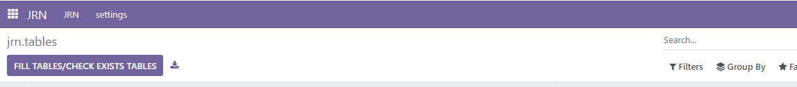
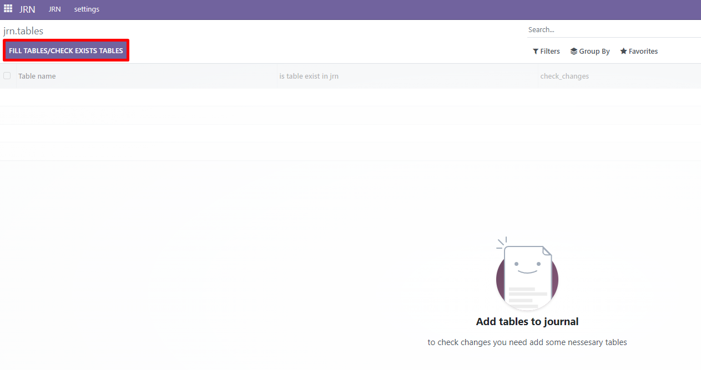
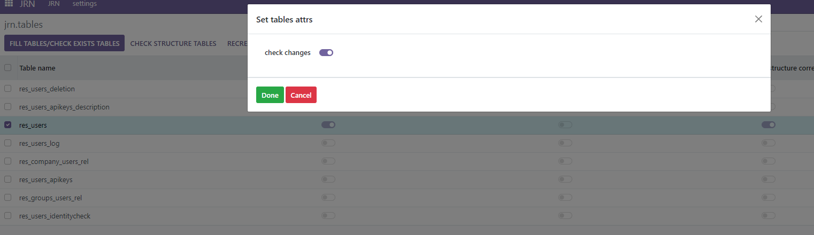
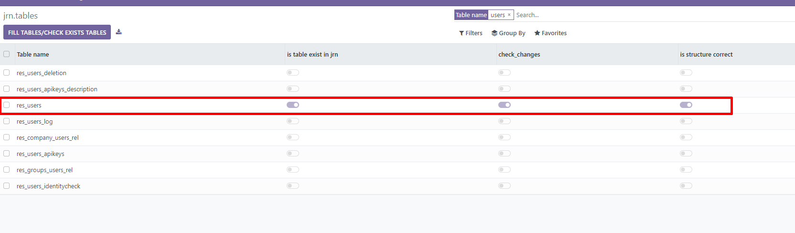
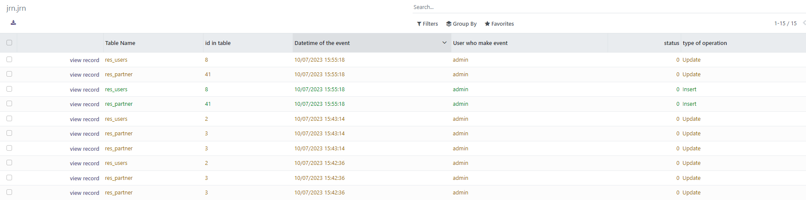
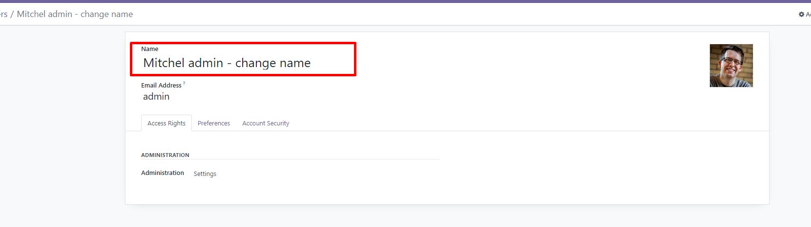

Fill in the list of ODOO tables
Go to JRN-settings-Tables

Click "Fill tables/check exists tables".

To start tracking table changes, you need to select them, then click "Recreate tables" and then "Set table attrs" where to select "check changes"

After these actions, the tables will have the corresponding signs

Now the changes in the table are tracked and this can be seen in the general journal - JRN
In this example, we have added 2 tables to the tracking: res_users and res_partner
in the general log, we see the name of the table, its id, the name of the user who performed the action and the time of the action

For example, the user name was changed
to see which fields have been changed, click "view record"
the fields for which the changes were made are highlighted in red


To remove the tracking of tables, select them, click "Set table attrs" and in the window that opens, do not select the "check changes" sign, click OK